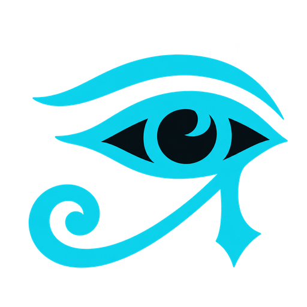
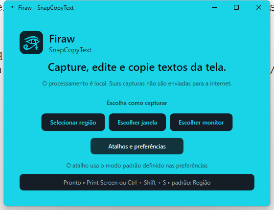

Texto copiável na própria imagem
Ative Selecionar texto, desenhe uma moldura sobre a imagem e receba somente aquele trecho na área de transferência.

FirawSnapCopyText Baixarcaptura inteligente no Windows
Selecione uma região, janela ou monitor. Edite no ato e copie o texto da imagem com OCR local — sem enviar sua captura para a internet.

demonstração
Escolha o modo que combina com o que está na sua tela. O Firaw oculta suas próprias janelas antes de capturar.
01
Arraste, mova e redimensione a área escolhida pelos oito pontos cianos. Confirme só quando o enquadramento estiver certo.
recursos
Ative Selecionar texto, desenhe uma moldura sobre a imagem e receba somente aquele trecho na área de transferência.
Caneta, seta, retângulo, marca-texto, texto, censura e caixas de anotação.
O ciano Firaw é a cor principal, acompanhado por sete opções rápidas.
Fica na bandeja, pode iniciar com o Windows e entende cliques rápidos no Olho de Hórus.
A gaveta de histórico guarda até 100 cópias enquanto o Firaw está aberto. Selecione várias e copie tudo de uma vez.
privacidade
O OCR usa arquivos locais em português e inglês. Não há login, galeria na nuvem nem envio automático das capturas.
versão 1.1.0
Escolha a arquitetura do seu Windows. Para computadores atuais, use x64.